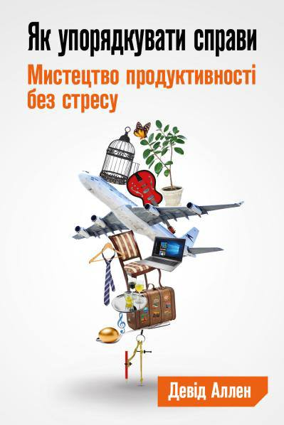
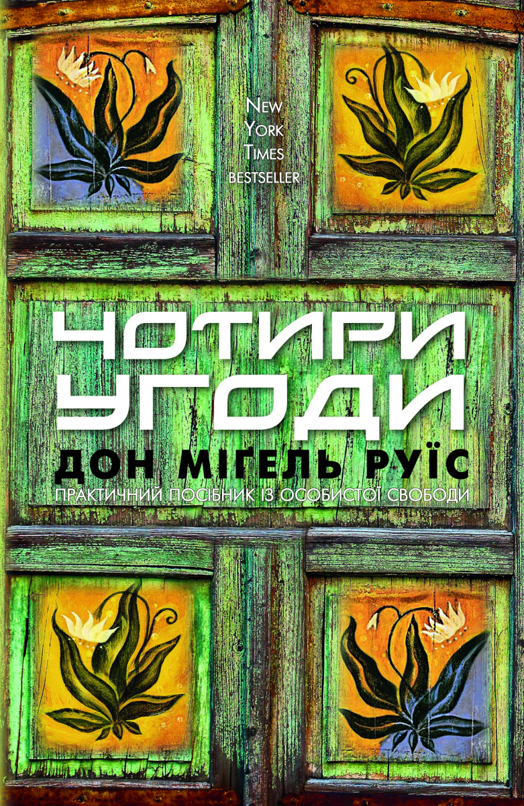

Ресурси для саморозвитку
Добірка матеріалів для розвитку навичок, мотивації та продуктивності. Оберіть із категорій книг, відео та статей.
Книги
Думай повільно... вирішуй швидко
Автор: Даніель Канеман
Sapiens. Коротка історія людства
Автор: Юваль Ной Харарі

Як привести справи в порядок
Автор: Девід Аллен
Страждання від безглуздості життя
Автор: Віктор Франкл

Чотири угоди
Автор: Мігель Руїс
Сім духовних законів успіху
Автор: Діпак Чопра
Книга радості
Автори: Далай-лама XIV, Десмонд Туту
Сила моменту зараз
Автор: Екхарт Толе